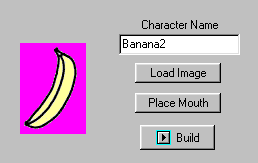
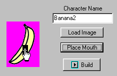
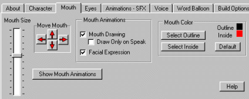
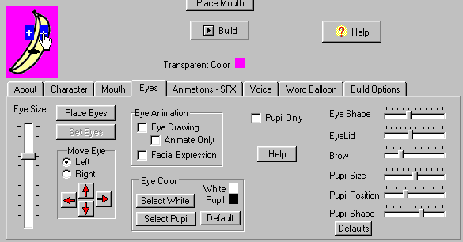
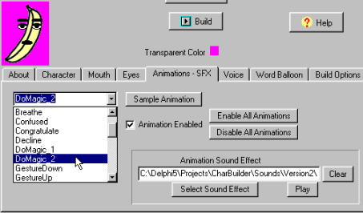
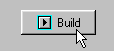
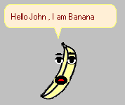

| ||||||||||||||||||
| ||||||||||||||||||
| In this example we select a very simple image. A banana. |  |
 | Next, we place the position of the mouth by moving a cursor. |
| If we like, we can change some of the mouth settings. |  |
 | Now we place the eyes, again by moving a cursor. We can also set the way we want the eyes to appear. |
| Setting a few sound effects is real easy. |  |
 | Now we click the Build Button and watch. In a few seconds, hundreds of animation cells are created and assembled into a character. |
| The result is a fully animated banana character. He has 32 animations with 506 animation frames and 13 sound effects. |  |